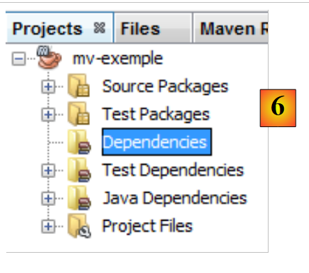
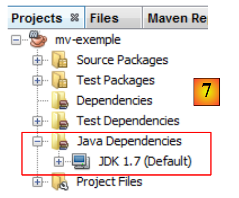

3. In diesem Dokument verwendete Tools
Die Beispiele in diesem Dokument wurden mit den folgenden Tools getestet:
- NetBeans-Versionen 6.8 bis 7.1.2. Die Installation von NetBeans wird in [ref3] in Abschnitt 1.3.1 beschrieben.
- WampServer Version 2.2. Die Installation von WampServer wird in [ref3] in Abschnitt 1.3.3 beschrieben;
- Maven ist in NetBeans integriert. Wir werden dieses Tool nun beschreiben.
3.1. Maven
3.1.1. Einführung
Maven ist unter der URL [http://maven.apache.org/index.html ] verfügbar. Laut den Entwicklern:
Das Hauptziel von Maven ist es, Entwicklern zu ermöglichen, den vollständigen Stand eines Entwicklungsprojekts in kürzester Zeit zu erfassen. Um dieses Ziel zu erreichen, befasst sich Maven mit mehreren Schlüsselbereichen:
- Vereinfachung des Build-Prozesses
- Bereitstellung eines einheitlichen Build-Systems
- Bereitstellung hochwertiger Projektinformationen
- Bereitstellung von Richtlinien für bewährte Verfahren in der Entwicklung
- Nahtlose Migration zu neuen Funktionen ermöglichen
Maven ist in NetBeans integriert, und wir werden es für nur eine seiner Funktionen nutzen: die Verwaltung der Bibliotheken eines Projekts. Diese bestehen aus allen JAR-Dateien, die sich im Klassenpfad des Projekts befinden müssen. Es kann eine große Anzahl davon geben. Beispielsweise werden unsere zukünftigen Projekte das Hibernate-ORM (Object-Relational Mapper) verwenden. Dieses ORM besteht aus Dutzenden von JAR-Dateien. Der Vorteil von Maven besteht darin, dass wir nicht alle kennen müssen. Wir müssen in unserem Projekt lediglich angeben, dass wir Hibernate benötigen, indem wir alle notwendigen Informationen bereitstellen, um die Haupt-JAR-Datei für dieses ORM zu finden. Maven lädt dann auch alle von Hibernate benötigten Bibliotheken herunter. Diese werden als Hibernate-Abhängigkeiten bezeichnet. Eine von Hibernate benötigte Bibliothek kann ihrerseits von anderen Archiven abhängig sein. Diese werden ebenfalls heruntergeladen. Alle diese Bibliotheken werden in einem Ordner abgelegt, der als lokales Maven-Repository bezeichnet wird.
Ein Maven-Projekt lässt sich leicht weitergeben. Wenn Sie es von einem Computer auf einen anderen übertragen und die Abhängigkeiten des Projekts nicht im lokalen Repository des neuen Computers vorhanden sind, werden sie heruntergeladen.
Maven kann eigenständig verwendet oder in eine IDE (Integrated Development Environment) wie NetBeans oder Eclipse integriert werden.
Erstellen wir ein Maven-Projekt in NetBeans:
 |
- Erstellen Sie unter [1] ein neues Projekt,
- wählen Sie in [2] die Kategorie [Maven] und den Projekttyp [Java-Anwendung] aus,
 |
- Geben Sie in [3] das übergeordnete Verzeichnis für das neue Projekt an,
- Geben Sie in [4] einen Namen für das Projekt ein,
- in [5] das generierte Projekt.
Sehen wir uns die Komponenten des Projekts an und erläutern wir die jeweilige Funktion.
 |
- in [1]: die verschiedenen Zweige des Projekts:
- [Quellpakete]: die Java-Klassen des Projekts;
- [Testpakete]: die Testklassen des Projekts;
- [Abhängigkeiten]: die vom Projekt benötigten und von Maven verwalteten .jar-Archive;
- [Testabhängigkeiten]: die für die Tests des Projekts erforderlichen .jar-Dateien, die von Maven verwaltet werden;
- [Java-Abhängigkeiten]: die vom Projekt benötigten .jar-Dateien, die nicht von Maven verwaltet werden;
- [Projektdateien]: Maven- und NetBeans-Konfigurationsdateien,
 |
- in [3], der Zweig [Source Packages],
Dieser Zweig enthält den Quellcode für die Java-Klassen des Projekts. NetBeans hat eine Standardklasse generiert:
package istia.st.mvexemple;
/**
* Hello world!
*
*/
public class App {
public static void main(String[] args) {
System.out.println("Hello World!");
}
}
 |
- in [4] den Zweig [Test Packages], der den Quellcode für die Testklassen des Projekts enthält,
- in [5] die JUnit 3.8-Bibliothek, die zum Ausführen der Tests benötigt wird,
NetBeans hat eine Standardklasse generiert:
package istia.st.mvexemple;
import junit.framework.Test;
import junit.framework.TestCase;
import junit.framework.TestSuite;
/**
* Unit test for simple App.
*/
public class AppTest extends TestCase {
/**
* Create the test case
*
* @param testName
* name of the test case
*/
public AppTest(String testName) {
super(testName);
}
/**
* @return the suite of tests being tested
*/
public static Test suite() {
return new TestSuite(AppTest.class);
}
/**
* Rigourous Test :-)
*/
public void testApp() {
assertTrue(true);
}
}
Dies ist ein JUnit 3.8-Test. Wir werden später JUnit 4.x-Tests verwenden.
 |
- In [6] ist der Abschnitt [Dependencies] hier leer,
Dieser Abschnitt zeigt alle Bibliotheken an, die das Projekt benötigt und die von Maven verwaltet werden. Alle hier aufgeführten Bibliotheken werden automatisch von Maven heruntergeladen. Aus diesem Grund benötigt ein Maven-Projekt einen Internetzugang. Die heruntergeladenen Bibliotheken werden lokal gespeichert. Wenn ein anderes Projekt eine Bibliothek benötigt, die lokal bereits vorhanden ist, wird sie nicht erneut heruntergeladen. Wir werden sehen, dass diese Liste der Bibliotheken sowie die Repositorys, in denen sie zu finden sind, in der Konfigurationsdatei des Maven-Projekts definiert sind.
 |
- In [7] werden die Bibliotheken, die vom Projekt benötigt, aber nicht von Maven verwaltet werden,
 |
- in [7], der Konfigurationsdatei [pom.xml] für das Maven-Projekt. POM steht für „Project Object Model“. Wir müssen diese Datei direkt bearbeiten.
Die generierte [pom.xml]-Datei sieht wie folgt aus:
<project xmlns="http://maven.apache.org/POM/4.0.0" xmlns:xsi="http://www.w3.org/2001/XMLSchema-instance"
xsi:schemaLocation="http://maven.apache.org/POM/4.0.0 http://maven.apache.org/xsd/maven-4.0.0.xsd">
<modelVersion>4.0.0</modelVersion>
<groupId>istia.st</groupId>
<artifactId>mv-exemple</artifactId>
<version>1.0-SNAPSHOT</version>
<packaging>jar</packaging>
<name>mv-exemple</name>
<url>http://maven.apache.org</url>
<properties>
<project.build.sourceEncoding>UTF-8</project.build.sourceEncoding>
</properties>
<dependencies>
<dependency>
<groupId>junit</groupId>
<artifactId>junit</artifactId>
<version>3.8.1</version>
<scope>test</scope>
</dependency>
</dependencies>
</project>
- Die Zeilen 5–8 definieren das Java-Artefakt, das vom Maven-Projekt erstellt wird. Diese Informationen stammen aus dem Assistenten, der bei der Erstellung des Projekts verwendet wurde:
 |
Ein Maven-Artefakt wird durch vier Eigenschaften definiert:
- [groupId]: Eine Angabe, die einem Paketnamen ähnelt. Beispielsweise haben die Bibliotheken des Spring-Frameworks die groupId=org.springframework, während die des JSF-Frameworks die groupId=javax.faces haben,
- [artifactId]: der Name des Maven-Artefakts. In der Gruppe [org.springframework] finden wir die folgenden artifactIDs: spring-context, spring-core, spring-beans, ... In der Gruppe [javax.faces] finden wir die artifactId jsf-api,
- [version]: die Versionsnummer des Maven-Artefakts. So hat das Artefakt org.springframework.spring-core die folgenden Versionen: 2.5.4, 2.5.5, 2.5.6, 2.5.6.SECO1, ...
- [packaging]: das Format des Artefakts, meist war oder jar.
Unser Maven-Projekt generiert ein [jar] (Zeile 8) in der Gruppe [istia.st] (Zeile 5) mit dem Namen [mv-example] (Zeile 6) und der Version [1.0-SNAPSHOT] (Zeile 7). Diese vier Informationen müssen ein Maven-Artefakt eindeutig identifizieren.
In den Zeilen 17–24 sind die Abhängigkeiten des Maven-Projekts aufgeführt, d. h. die Liste der vom Projekt benötigten Bibliotheken. Jede Bibliothek wird durch die vier Angaben (groupId, artifactId, version, packaging) definiert. Fehlt die Angabe zur Verpackung, wie hier, wird die jar-Verpackung verwendet. Eine weitere Information wird hinzugefügt: scope, das angibt, in welchen Phasen des Projektlebenszyklus die Bibliothek benötigt wird. Der Standardwert ist compile, was bedeutet, dass die Bibliothek für die Kompilierung und Ausführung benötigt wird. Der Wert test bedeutet, dass die Bibliothek während des Testens des Projekts benötigt wird. Dies ist hier bei der JUnit 3.8.1-Bibliothek der Fall. Wenn diese Bibliothek nicht im lokalen Repository auf dem Rechner vorhanden ist, wird sie heruntergeladen.
3.1.2. Ausführen des Projekts
Wir führen das Projekt aus:
 |
In [1] wird das Maven-Projekt erstellt und anschließend ausgeführt [1]. Die Protokolle in der NetBeans-Konsole lauten wie folgt:
Das Ergebnis steht in Zeile 23. Wir sehen, dass Maven selbst in diesem einfachen Fall einige Abhängigkeiten heruntergeladen hat (Zeilen 17 und 20).
3.1.3. Das Dateisystem eines Maven-Projekts
 |
- [1]: Das Dateisystem des Projekts befindet sich auf der Registerkarte [Dateien],
- [2]: Die Java-Quelldateien befinden sich im Ordner [src/main/java],
- [3]: Die Java-Testquelldateien befinden sich im Ordner [src/test/java],
- [4]: Der Ordner [target] wird beim Erstellen des Projekts angelegt,
- [5]: Hier hat der Projekt-Build ein Archiv [mv-example-1.0-SNAPSHOT.jar] erstellt.
3.1.4. Das lokale Maven-Repository
Wir haben erwähnt, dass Maven die für das Projekt erforderlichen Abhängigkeiten herunterlädt und lokal speichert. Sie können dieses lokale Repository erkunden:
 |
- Wählen Sie unter [1] die Option [Fenster / Sonstiges / Maven-Repository-Browser] aus,
- in [2] öffnet sich die Registerkarte [Maven-Repositorys],
- in [3] enthält er zwei Zweige, einen für das lokale Repository und einen für das zentrale Repository. Letzteres ist riesig. Um dessen Inhalt anzuzeigen, müssen Sie den Index aktualisieren [4]. Diese Aktualisierung dauert mehrere Dutzend Minuten.
 |
- In [5] finden Sie die Bibliotheken im lokalen Repository,
- in [6] finden Sie einen Zweig [istia.st], der der [groupId] unseres Projekts entspricht,
- in [7] können Sie auf die Eigenschaften des lokalen Repositorys zugreifen,
- in [8] sehen Sie den Pfad zum lokalen Repository. Es ist nützlich, dies zu wissen, da Maven manchmal (selten) nicht mehr die neueste Version des Projekts verwendet. Sie nehmen Änderungen vor und stellen fest, dass diese nicht übernommen werden. Sie können dann den Zweig im lokalen Repository, der Ihrer [groupId] entspricht, manuell löschen. Dies zwingt Maven dazu, den Zweig aus der neuesten Version des Projekts neu zu erstellen.
3.1.5. Suche nach einem Artefakt mit Maven
Lassen Sie uns nun lernen, wie man mit Maven nach einem Artefakt sucht. Beginnen wir mit der Liste der aktuellen Abhängigkeiten in der [pom.xml]-Datei:
<project xmlns="http://maven.apache.org/POM/4.0.0" xmlns:xsi="http://www.w3.org/2001/XMLSchema-instance"
xsi:schemaLocation="http://maven.apache.org/POM/4.0.0 http://maven.apache.org/xsd/maven-4.0.0.xsd">
<modelVersion>4.0.0</modelVersion>
<groupId>istia.st</groupId>
<artifactId>mv-exemple</artifactId>
<version>1.0-SNAPSHOT</version>
<packaging>jar</packaging>
<name>mv-exemple</name>
<url>http://maven.apache.org</url>
<properties>
<project.build.sourceEncoding>UTF-8</project.build.sourceEncoding>
</properties>
<dependencies>
<dependency>
<groupId>junit</groupId>
<artifactId>junit</artifactId>
<version>3.8.1</version>
<scope>test</scope>
</dependency>
</dependencies>
</project>
In den Zeilen 17–23 werden die Abhängigkeiten definiert, die wir ändern werden, um die neuesten Versionen der Bibliotheken zu verwenden.
 |
Zunächst entfernen wir die aktuellen Abhängigkeiten [1]. Anschließend wird die Datei [pom.xml] geändert:
<project xmlns="http://maven.apache.org/POM/4.0.0" xmlns:xsi="http://www.w3.org/2001/XMLSchema-instance"
xsi:schemaLocation="http://maven.apache.org/POM/4.0.0 http://maven.apache.org/xsd/maven-4.0.0.xsd">
<modelVersion>4.0.0</modelVersion>
<groupId>istia.st</groupId>
<artifactId>mv-exemple</artifactId>
<version>1.0-SNAPSHOT</version>
<packaging>jar</packaging>
<name>mv-exemple</name>
<url>http://maven.apache.org</url>
<properties>
<project.build.sourceEncoding>UTF-8</project.build.sourceEncoding>
</properties>
<dependencies></dependencies>
</project>
Zeile 17: Die entfernte Abhängigkeit erscheint nicht mehr in [pom.xml]. Suchen wir nun in den Maven-Repositorys danach.
 |
- In [1] fügen wir dem Projekt eine Abhängigkeit hinzu;
- in [2] müssen wir Informationen zu dem gesuchten Artefakt angeben (groupId, artifactId, version, packaging (Type) und scope). Wir beginnen mit der Angabe der [groupId] [3],
- in [4] drücken wir die [Leertaste], um die Liste der möglichen Artefakte anzuzeigen. Hier [junit] und [jnit-dep]. Wir wählen [junit],
- in [5] wählen wir nach dem gleichen Verfahren die aktuellste Version aus. Der Packaging-Typ ist jar,
- in [6] wählen wir den Test-Scope aus, um anzugeben, dass die Abhängigkeit nur für Testzwecke benötigt wird.
 |
Unter [6] werden die hinzugefügten Abhängigkeiten im Projekt angezeigt. Die Datei [pom.xml] spiegelt diese Änderungen wider:
<project xmlns="http://maven.apache.org/POM/4.0.0" xmlns:xsi="http://www.w3.org/2001/XMLSchema-instance"
xsi:schemaLocation="http://maven.apache.org/POM/4.0.0 http://maven.apache.org/xsd/maven-4.0.0.xsd">
<modelVersion>4.0.0</modelVersion>
<groupId>istia.st</groupId>
<artifactId>mv-exemple</artifactId>
<version>1.0-SNAPSHOT</version>
<packaging>jar</packaging>
<name>mv-exemple</name>
<url>http://maven.apache.org</url>
<properties>
<project.build.sourceEncoding>UTF-8</project.build.sourceEncoding>
</properties>
<dependencies>
<dependency>
<groupId>junit</groupId>
<artifactId>junit</artifactId>
<version>4.10</version>
<scope>test</scope>
<type>jar</type>
</dependency>
</dependencies>
</project>
Beachten Sie, dass die Datei [pom.xml] die in [6] gezeigte Abhängigkeit [hamcrest-core-1.1] nicht erwähnt. Dies liegt daran, dass es sich um eine Abhängigkeit von JUnit 4.10 und nicht des Projekts selbst handelt. Dies wird durch ein anderes Symbol im Zweig [Dependencies] angezeigt. Sie wurde automatisch heruntergeladen.
Nehmen wir nun an, wir kennen die [groupId] des gewünschten Artefakts nicht. Wir möchten beispielsweise Hibernate als ORM (Object Relational Mapper) verwenden, und das ist alles, was wir wissen. Dann können wir die Website [http://mvnrepository.com/] aufrufen:
 |
Unter [1] können Sie Stichwörter eingeben. Geben Sie „hibernate“ ein und starten Sie die Suche.
 |
- Wählen Sie in [2] die [groupId] „org.hibernate“ und die [artifactId] „hibernate-core“ aus.
- Wählen Sie in [3] die Version 4.1.2-Final aus.
- in [4] erhalten wir den Maven-Code, den wir in die [pom.xml]-Datei einfügen müssen. Machen wir das.
<project xmlns="http://maven.apache.org/POM/4.0.0" xmlns:xsi="http://www.w3.org/2001/XMLSchema-instance"
xsi:schemaLocation="http://maven.apache.org/POM/4.0.0 http://maven.apache.org/xsd/maven-4.0.0.xsd">
<modelVersion>4.0.0</modelVersion>
<groupId>istia.st</groupId>
<artifactId>mv-exemple</artifactId>
<version>1.0-SNAPSHOT</version>
<packaging>jar</packaging>
<name>mv-exemple</name>
<url>http://maven.apache.org</url>
<properties>
<project.build.sourceEncoding>UTF-8</project.build.sourceEncoding>
</properties>
<dependencies>
<dependency>
<groupId>junit</groupId>
<artifactId>junit</artifactId>
<version>4.10</version>
<scope>test</scope>
<type>jar</type>
</dependency>
<dependency>
<groupId>org.hibernate</groupId>
<artifactId>hibernate-core</artifactId>
<version>4.1.2.Final</version>
</dependency>
</dependencies>
</project>
Wir speichern die Datei [pom.xml]. Maven lädt daraufhin die neuen Abhängigkeiten herunter. Das Projekt entwickelt sich wie folgt:
 |
- in [5] die Abhängigkeit [hibernate-core-4.1.2-Final]. In dem Repository, in dem sie gefunden wurde, wird diese [artifactId] ebenfalls durch eine [pom.xml]-Datei beschrieben. Diese Datei wurde gelesen, und Maven stellte fest, dass die [artifactId] Abhängigkeiten hatte. Diese lädt es ebenfalls herunter. Dies geschieht für jede heruntergeladene [artifactId]. Letztendlich finden wir in [6] Abhängigkeiten, die wir nicht direkt angefordert haben. Sie sind durch ein anderes Symbol gekennzeichnet als das des Haupt-[artifactId].
In diesem Dokument nutzen wir Maven in erster Linie wegen dieser Funktion. So müssen wir nicht alle Abhängigkeiten einer Bibliothek kennen, die wir verwenden möchten. Wir überlassen deren Verwaltung Maven. Darüber hinaus stellen wir durch die gemeinsame Nutzung einer [pom.xml]-Datei unter den Entwicklern sicher, dass jeder Entwickler tatsächlich dieselben Bibliotheken verwendet.
In den folgenden Beispielen stellen wir lediglich die verwendete [pom.xml]-Datei zur Verfügung. Der Leser muss sie lediglich verwenden, um die im Dokument beschriebenen Bedingungen nachzubilden. Darüber hinaus werden Maven-Projekte von den gängigen Java-IDEs (Eclipse, NetBeans, IntelliJ, JDeveloper) unterstützt. Somit kann der Leser seine bevorzugte IDE verwenden, um die Beispiele zu testen.